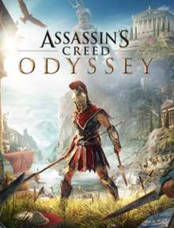

Assassin's Creed Odyssey is an action role-playing video game developed by Ubisoft Quebec and published by Ubisoft. It is the eleventh major installment, and 21st overall, in the Assassin's Creed series and the successor to 2017's Assassin's Creed Origins. Set in the years 431–422 BCE, the plot tells a mythological history of the Peloponnesian War between Athens and Sparta. Players control a male or female mercenary (Ancient Greek misthios) who fights on both sides of the conflict as they attempt to unite their family. |
 |
|---|---|
Assassin's Creed Odyssey places more emphasis on role-playing elements than previous games in the series. The game contains dialogue options, branching quests and multiple endings. The player is able to choose between siblings Alexios and Kassandra as to whom they use as the main character. The game features a notoriety system in which mercenaries chase after the player if they commit crimes like killing or stealing in the presence of others |
The game's historical story is set in 431–422 BC, four hundred years before the events of Assassin's Creed Origins. It recounts a secret mythological history set during the Peloponnesian War, which was fought between the city-states of Greece. The player takes on the role of a mercenary and is able to fight for the Delian League, led by Athens, or the Peloponnesian League, led by Sparta.The game's main storyline has the player character attempting to restore their fractured family after they and their siblings were thrown off a cliff in their youth and left for dead by their father by the command of the Spartan oracle. Parallel quest lines deal with the extirpation of a malign cult spanning the Greek world, and the discovery of artifacts and monsters from Atlantean times.